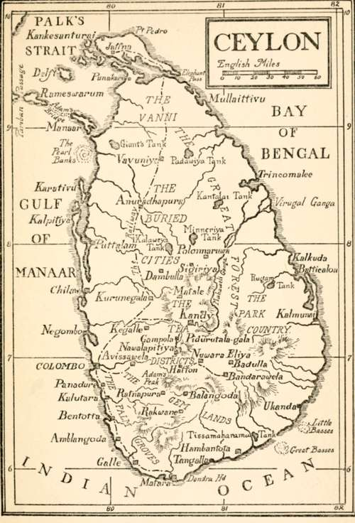

Chapter I. The Island
Description
This section is from the book "Ceylon", by Alfred Clark. Also available from Amazon: Ceylon.
Chapter I. The Island
Though separated from the continent only by the shallow Palk's Strait, some thirty miles wide, Ceylon differs so much from India in its zoology and botany that it is evident it has been an island for countless ages. For instance, there are no tigers, cheetahs, bisons, hyenas, wolves, or antelopes there, though these wild animals are common in India. The elephants of Ceylon are of a different breed, being tuskless, and there are a number of birds, reptiles, and plants peculiar to the island.
The greater part of Ceylon consists of forest covered plains, interspersed with rocky hills. The forest is so dense and unbroken that it is said a flock of monkeys might start from Point Pedro, the most northern point of the island, and travel to Dondra Head, at its southern extremity, some three hundred miles, without touching the ground once ! In the south central part is a mountainous region, covering about one quarter of the whole area of Ceylon. More than one hundred and sixty peaks, from three thousand to over eight thousand feet high, raise their tree-clad heads over the vast plateau. Among them is the world-famous Adam's Peak. Most of the rivers take their rise among the mountains, and after foaming through the rocky ravines, flow through bamboo-bordered banks into the sea all round the island. There are many magnificent waterfalls, either walls or waving curtains of white water, or roaring many-leap cataracts. There are no natural lakes, but along the coasts on the east and west are extensive salt-water lagoons or backwaters. On the north-west are a number of small islands, the principal of which is Manaar, from the northern end of which commences the string of islets and sandbanks forming Adam's Bridge.
Sketch-Map Of Ceylon.
The heat in Ceylon is less oppressive than in India. The island has three distinct climates—the hot and dry, in the north and east ; the hot and moist, in the west and south ; and the cold and moist in the central parts of it. There is no summer, winter, spring, nor autumn—or, rather, it is always summer, the temperature never varying much more than ten degrees throughout the year. There are, however, two annual seasons, called " monsoons." For one half of the year the wind blows almost constantly from the south-west, and for the other half trom the north-east. The " break of the monsoon " is always attended by violent atmospheric disturbances.
For some days before the change of the wind it is oppressively hot and still, then great masses of black cloud appear, and the wind begins to blow in gusts, gradually growing in strength, till, with a mighty roar, the storm bursts over the land in deluges of rain. In a few hours hundreds of trees are blown down or dismembered, scores of huts are unroofed, every tank is overflowing, and every river a rushing torrent. The failure of the monsoon means loss of crops, and famine to the people.
Sunsets, especially during the monsoons, are often very magnificent, the whole western sky being a blaze of gorgeous colours. One curious phenomenon often seen is called " Buddha's Rays," great shafts of coloured light streaming fanwise upwards into the blue sky from the point on the horizon where the sun has just sunk. Moonlight is especially brilliant in Ceylon, owing to the clearness of the air.
The tides are scarcely perceptible, but strong currents sweep round the south coasts for six months in a westerly direction, and for a similar period in an opposite direction. So strong are they that a story is told of a sailing-ship, in the old days, arriving during the monsoon opposite Galle after a long voyage, but, missing the tack for the harbour entrance, being caught in the current and disappearing for three weeks, during which time it crossed the Equator twice in its efforts to beat back against wind and current!
Ceylon has been celebrated from time immemorial for its pearls, its precious stones, its spices, especially cinnamon, its elephants, and its natural beauty. It is now famous for its palms, but these were introduced only within historical times.
Continue to: